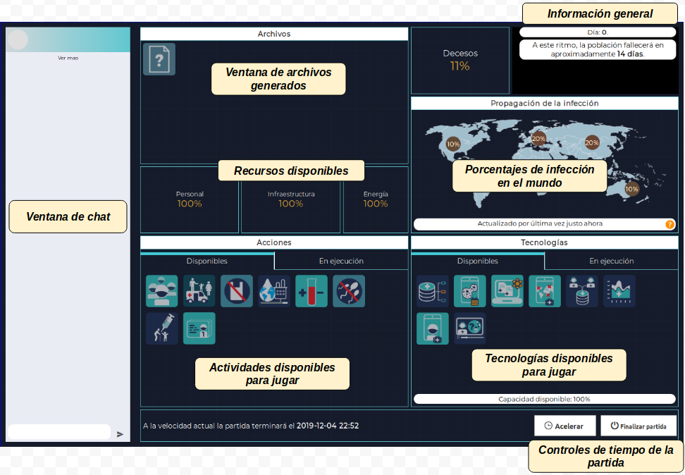
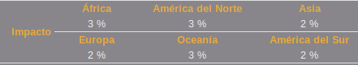
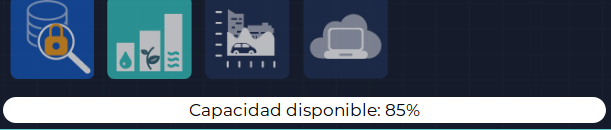
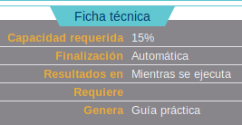

A nivel mundial se ha detectado una amenaza. Entidades sanitarias de todo el mundo notificaron la aparición de un nuevo fenómeno infeccioso a la Organización Mundial de la Salud (OMS). Dicho fenómeno se ha expandido rápidamente a lo largo y ancho del mundo y ha empezado a contar con víctimas mortales.
Según estudios preliminares realizados por investigadores en Oceanía, parece indicar que se trata de un agente viral, cuyo modo de transmisión es por vía respiratoria, con período de incubación de hasta seis horas. Investigadores europeos, han identificado que el modo de transmisión es por vía hematógena, con período de incubación de hasta 4 horas. Equipos múltiples africanos refieren que el probable modo de transmisión es por vía fecal - oral, con período de incubación de 8 horas. Mientras que equipos de trabajo americanos y asiáticos refieren que existen múltiples modos de transmisión.
Según proyecciones realizadas, parece que la infección afecta de manera exponencial a la población.
A partir de la observación de personas infectadas se ha detectado que la infección compromete diversos sistemas a lo largo del tiempo. Al parecer, el comportamiento de la población cambia durante el tiempo de evolución de la infección y la gravedad de los síntomas se incrementa hasta llegar a la muerte pasadas 48 horas de iniciada la sintomatología.
Un aspecto destacado que han reportado algunos investigadores, sin que sea concluyente, es que este evento no hace distinción por sexo, raza, situación económica ni latitud.
Estudiar el fenómeno, encontrar la causa de la infección y aplicar el tratamiento adecuado y oportuno podría controlar la pandemia y salvar a la humanidad.
Se realizó una búsqueda expresa de tecnologías en salud, disponibles a nivel mundial al momento, que pudieran ser de apoyo para el equipo experto encontrando un pool de tecnologías y de acciones que pudieran utilizar. Estas acciones y tecnologías están relacionadas con:
- Guías de práctica basadas en la evidencia
- Telesalud
- Aplicativos y dispositivos móviles
- Inteligencia artificial y big data
Es momento entonces de empezar a articular y poner en práctica conocimientos, de trabajar con pares y de controlar la pandemia.
Seleccione el nivel de dificultad en el que desea jugar.
Reglas básicas
“Pandemia” - Juego colaborativo de cartas y tablero
Este juego pretende lograr la aplicación de tecnologías en salud en un escenario simulado: una pandemia. Es producto de un escenario simulado y ficticio cuya finalidad es incentivar el uso y apropiación de herramientas tecnológicas en diferentes escenarios del proceso salud-enfermedad, por tanto, no está a prueba el razonamiento ni juicio clínico. La pandemia progresivamente irá generando contagio y fallecimiento a la población mundial. Los participantes deberán aplicar diversas estrategias y tomar decisiones en tiempo real que les permitirá encontrar soluciones parciales o definitivas para controlar la infección y así salvar a la población restante o por el contrario dará al traste la vida humana en el planeta.
Instrucciones generales del juego
Se parte de una problemática que está afectando la vida como la conocemos; esta problemática fue detectada por las entidades sanitarias de diversos países en diversos continentes y notificada a la Organización Mundial de la Salud (OMS). Los dirigentes de la OMS a su vez realizan una reunión extraordinaria con la información obtenida y generan un informe resumido acerca de lo que está sucediendo en el mundo.
Usted se encuentra trabajando para la OMS y es seleccionado para asesorar, planificar, gestar y ejecutar un plan de acción que controle este evento en salud particular y ojalá prevenga situaciones similares en salud venideras. De igual manera, son seleccionados otros miembros con los que deberá trabajar. La OMS considera que un equipo conformado por entre 3 y 5 expertos podrá revisar la información y ejecutar el plan de acción.
Dadas las condiciones de gravedad de la pandemia, deben trabajar al interior de un laboratorio, no tendrán contacto físico con otras personas pensando en su protección. Contarán como herramienta con un chat pero podrán comunicarse de manera virtual con el resto del equipo de trabajo por otros canales si lo consideran necesario.
La OMS generó una alerta a nivel mundial informando que se avecina la peor problemática en salud que se conoce al momento, dio parte de tranquilidad sobre que tiene un personal experto trabajando las 24 horas del día y generando acciones encaminadas a salvar la población. Así que, progresivamente el equipo definirá acciones a desarrollar que deberán ser acatadas por la población.
Adicionalmente, emitirá informes periódicos para actualizar el estado de salud mundial.
La tarea: salvar la vida humana mediante el control de la pandemia en el mundo.
¿Cómo se hace?: los jugadores disponen de 48 días para controlar la pandemia del mundo porque si no lo hacen, la pandemia entrará en fase de no retorno y acabará con toda la población humana.
Tenga en consideración:
Cuando inicien la partida se activará un conteo regresivo que irá mostrando cuántos días restan. Al finalizar la partida, en caso de no haber logrado la meta propuesta, tendrán un intento adicional. Cada grupo cuenta con 2 intentos.
En el tablero de juego, le aparecerá a cada participante tres elementos diferentes:
- Una imagen de los efectos de la pandemia por continente.
- Un elemento para comunicación compartida: tipo chat.
- Una carpeta tipo biblioteca de recursos: en la cual podrán compartir información como resultados de las herramientas empleadas: exámenes, imágenes u otros. En esta carpeta no subirán información real sino archivos que se generan en el juego.
- Un panel inferior donde aparecerán acciones y tecnologías. Al ingresar en ellos podrán ver las características de cada uno.
Componentes del juego:
- Al iniciar una partida se ofrece la posibilidad de seleccionar el nivel de dificultad, entre: fácil, normal o difícil.

- Cuando se inicia la partida a cada jugador se le presenta un tablero de juego con las siguientes secciones:

- Cada integrante del equipo comienza con una serie de cartas que representan las “acciones” y las “tecnologías”. Dichas cartas se han repartido aleatoriamente entre los integrantes y no hay cartas repetidas, por lo que la comunicación es muy importante para definir la estrategia de qué cartas jugar. Cada jugador puede conocer el detalle de las acciones y tecnologías disponibles haciendo clic sobre cada una de ellas y viendo su ficha técnica.
 Ficha técnica de una acción.
Ficha técnica de una acción. - Desde el inicio del juego cada integrante del equipo tiene las mismas posibilidades de jugar sus cartas; no hay turnos de juego.
Jugar una acción:
Cuando un jugador desee activar una acción debe considerar lo siguiente:
- En la ficha técnica observar que cuente con los recursos requeridos de personal, infraestructura y energía.
 Ejemplo de recursos requeridos por una acción.
Ejemplo de recursos requeridos por una acción. - Observar que la acción no requiera una tecnología o un archivo específico o, en caso que lo requiera, que dicho archivo ya esté disponible en la ventana de archivos, o que la tecnología ya esté en ejecución, así haya sido jugada por otro compañero del equipo.
 Ejemplo de tecnología y archivo requeridos en una acción.
Ejemplo de tecnología y archivo requeridos en una acción. -
Considerar el tiempo que tarda la acción en generar recursos y su tipo de finalización: manual o automática.
 Ejemplo de acción con finalización manual y resultados a partir de la semana 14.
Ejemplo de acción con finalización manual y resultados a partir de la semana 14.Toda acción que se retire de la ventana de ejecución liberará los recursos requeridos para su ejecución, permitiendo así aumentar dichos recursos para jugar otras acciones.
- Considerar el impacto que tiene la acción cuando genere resultados:
Ejemplo de impacto de una acción en los diferentes continentes.
El impacto de la acción se genera cuando cumple en ejecución el tiempo definido en “Resultados en”. Las acciones de finalización manual siguen generando el impacto a partir de ese momento.
Es importante jugar acciones cuyo resultado sea antes del tiempo estimado de finalización de los recursos.
Procure jugar acciones que tengan un alto impacto positivo en la mayoría de continentes o en aquellos que más contagios presenta.
- Una vez considerados los puntos anteriores, presione el botón “Ejecutar”. El sistema validará y pondrá la acción en ejecución.
Existen dos tipos de finalización para las acciones. La finalización “Manual” indica que, una vez la acción está en ejecución, permanecerá en dicho estado hasta que un jugador decida “Detenerla” en la pestaña de “Ejecución”. Por el contrario, si la finalización es “Automática”, la acción dejará de estar en ejecución automáticamente una vez cumpla su tiempo de generación de resultados.
Si una acción está generando buenos resultados y no se requieren los recursos que utiliza, lo mejor es dejarla en ejecución.
Jugar una tecnología:
Cuando un jugador desee activar una tecnología debe considerar lo siguiente:
-
En la ficha técnica de la tecnología observar que cuente con la capacidad requerida necesaria.
 Ejemplo de capacidad requerida por una tecnología.
Ejemplo de capacidad requerida por una tecnología.La capacidad disponible se observa bajo la ventana de las tecnologías disponibles o en ejecución:
En la imagen se ve que todavía queda 85% de capacidad para ejecutar tecnologías. - Observar qué archivos requiere.
Ejemplo de una tecnología que no requiere archivo y genera el archivo "Guía práctica".
- Identificar los archivos que genera y el tiempo que tarda en generarlos.
- Una vez considerados los puntos anteriores, presionar el botón “Ejecutar”. El sistema validará y pondrá la tecnología en ejecución.
Existen dos tipos de finalización para las tecnologías. La finalización “Manual” indica que la tecnología se mantendrá en ejecución hasta que se decida detenerla; si una acción depende de la tecnología que se desea detener, primero debe ser detenida la acción. Si la finalización es “Automática”, la tecnología dejará de estar en ejecución automáticamente una vez cumpla su tiempo de generación de resultados. Los archivos que genere seguirán disponibles sin importar que la tecnología ya no esté en ejecución.
Es útil jugar aquellas tecnologías que estén asociadas a la producción de archivos o den soportes a acciones que se haya decidido jugar, para evitar consumir capacidad en tecnologías no requeridas.
Existe una tecnología llamada “App móvil - Pandemia al día”. Se recomienda jugar esta tecnología para mantener actualizada la información de la propagación de la infección.
Generar archivos
Algunas acciones tienen como prerrequisito determinados archivos. Estos archivos son generados por las tecnologías. Para generar un archivo específico se deben mirar las fichas técnicas de las tecnologías y poner en ejecución aquella que genere dicho archivo. La tecnología producirá el archivo de manera automática al momento de generar resultados y dicho archivo quedará disponible hasta finalizar la partida.
Detención o retiro de cartas en ejecución
Solo el jugador que juega determinada carta puede detener su ejecución. Sin embargo, si la carta es de finalización automática, una vez que pase el tiempo necesario se retirará automáticamente de las cartas en ejecución y quedará disponible de nuevo.
Las proyecciones que se muestran al usuario (tiempo, infección y decesos) se hacen con base en estimaciones o valores obtenidos al momento de la proyección, sin embargo no necesariamente así se comportará el juego, pueden haber modificaciones con cada cambio de día.
Otras reglas y condiciones a considerar:
- El juego tiene una duración de 48 “días virtuales”.
- Cada día corresponde a una hora real, es decir, el juego puede durar máximo 48 horas reales.
- Para facilitar la jugada de una partida en los casos que se requiera agilidad, los jugadores pueden acelerar el paso del tiempo en 5X, es decir, un día virtual durará poco menos de 4 minutos y un juego completo duraría aproximadamente 3 horas.
- La duración del juego puede ser mucho menor si todas las personas mueren, en ese caso se pierde el juego.
- En cualquier momento los jugadores pueden “finalizar la partida”. Cuando se finaliza una partida, se hace una proyección de los resultados con base en lo generado hasta el momento, para determinar si se ganó o se perdió el juego.
- Una vez finalizada la primera partida, se puede iniciar una segunda. Solamente se tienen dos partidas disponibles por grupo.